F-248 / SF-248-03 → SF-248-10. Captures du banc (/jarvis-banc?banc=pancartes-…, développement seulement) : faits fictifs, aucun réseau. Téléphone 390×844 et PC 1920×1080, rendu logiciel.
Point de goût soumis au PO (cadrage §11, non bloquant) : la taille du bloc unique et la densité du mur.
Le jeu (SF-248-04, D5)
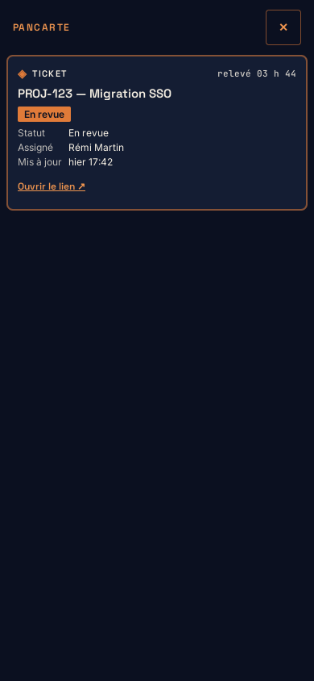
Une pancarte : un bloc au centre, au-dessus du cœur (héros, échelle 1,6) · téléphone
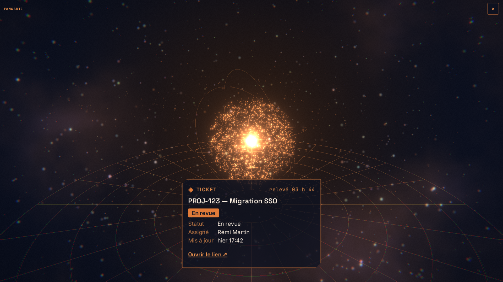
Une pancarte : un bloc au centre, au-dessus du cœur (héros, échelle 1,6) · PC
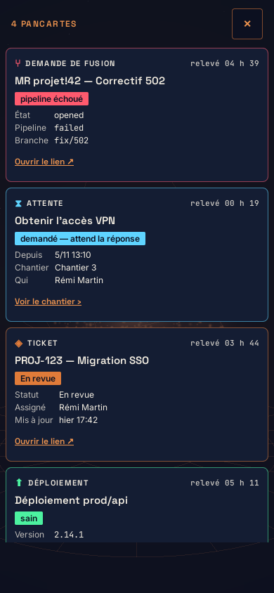
De 2 à 6 : éventail dont l'arc suit le nombre ; au téléphone, pile 2D défilable · téléphone
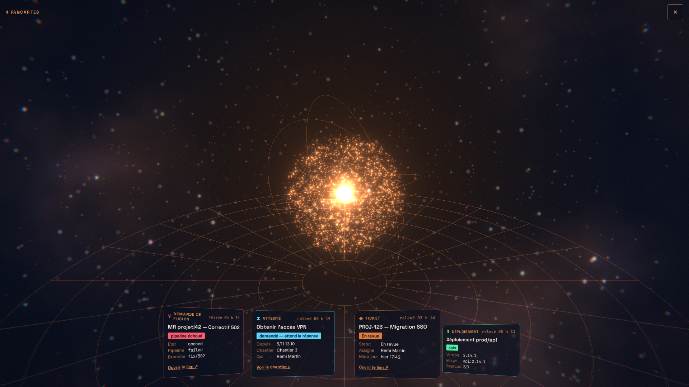
De 2 à 6 : éventail dont l'arc suit le nombre ; au téléphone, pile 2D défilable · PC
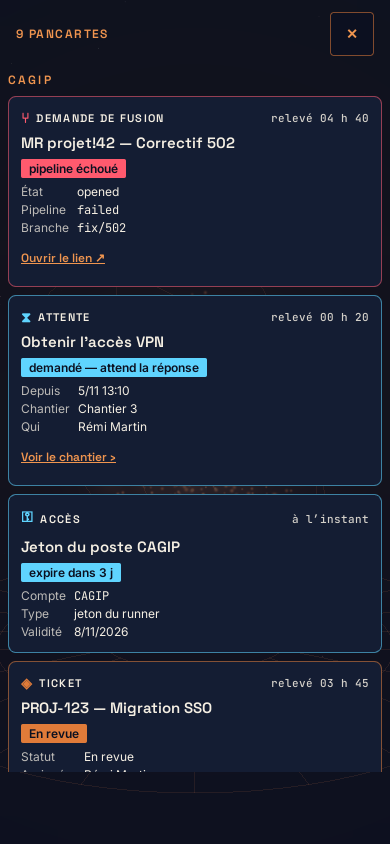
7 et plus : mur de 6, groupé par client, dernière case « et N autres » · téléphone
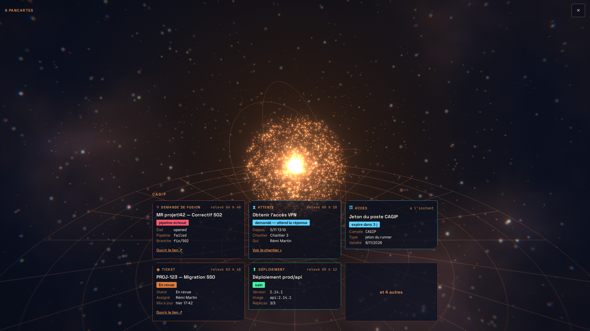
7 et plus : mur de 6, groupé par client, dernière case « et N autres » · PC
Interaction (SF-248-06)
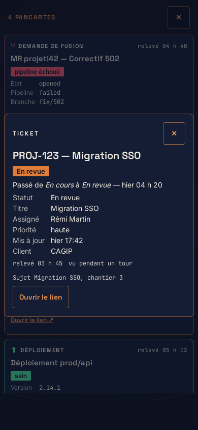
Plein écran : tous les champs, « passé de … à … », source, sujet et chantier, lien · téléphone
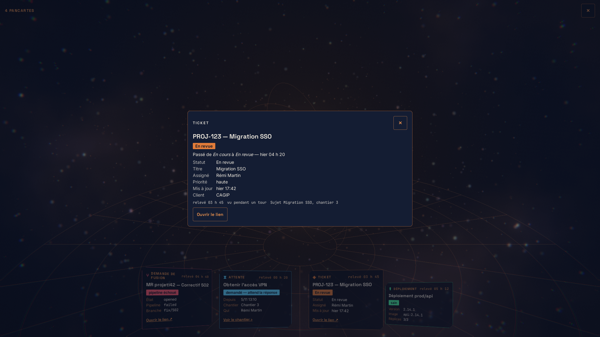
Plein écran : tous les champs, « passé de … à … », source, sujet et chantier, lien · PC
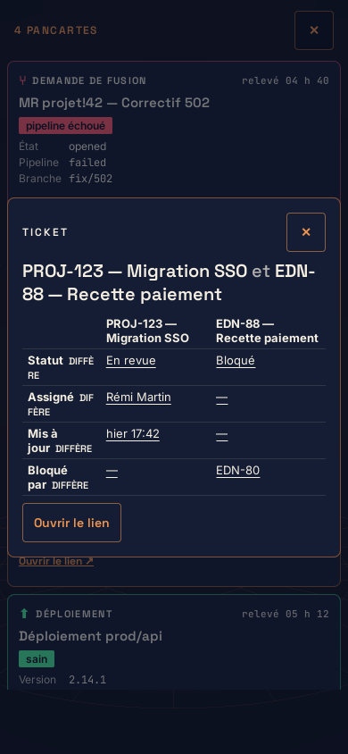
Comparer deux pancartes : champs alignés, « diffère » écrit · téléphone
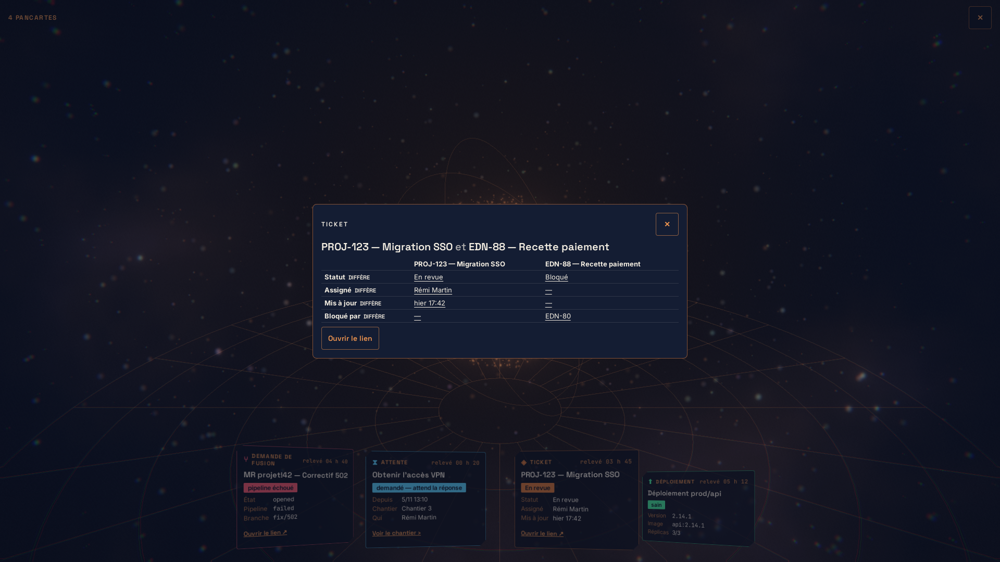
Comparer deux pancartes : champs alignés, « diffère » écrit · PC
Le registre (SF-248-07)
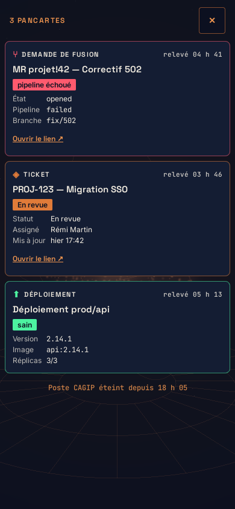
Poste éteint : la mention en pied du jeu, une fois · téléphone
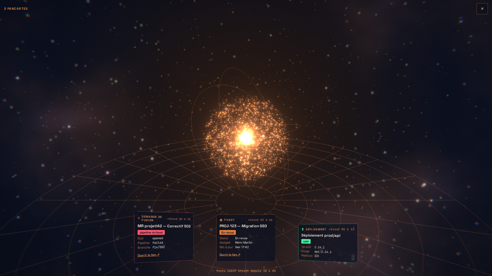
Poste éteint : la mention en pied du jeu, une fois · PC
Statut toujours écrit, ton de la palette §23 (rouge réservé aux alertes : « pipeline échoué ») ; forme et mot du type ; badge de fraîcheur posé par la passerelle.
Accès : compte, type, validité, état — jamais la valeur (corpus « aucun secret » 100 %, SF-248-09).